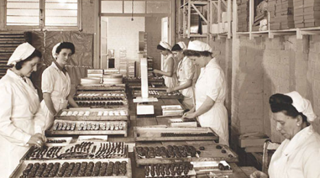
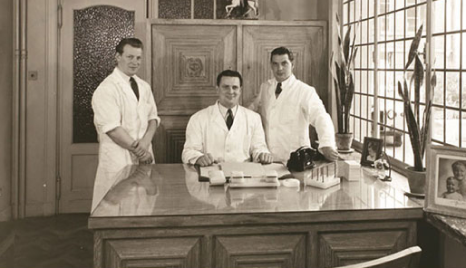
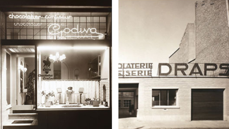
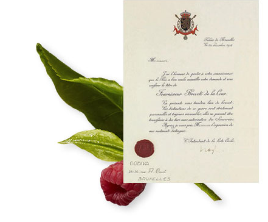
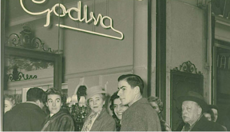
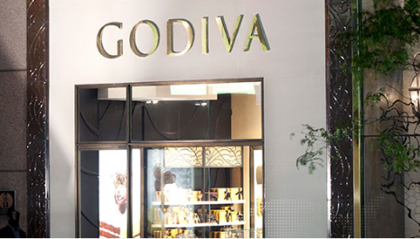

- 1926
-
1926년, 피에르 드랍스 시니어는 브뤼셀의 과자점에서 프랄린을 만들기 시작했습니다. 그의 세 아들 조셉, 프랑수아, 피에르 주니어 또한 어린 시절부터 가족사업에 참여하였습니다.

- 1937
-
온 힘을 초콜릿에 쏟으면서 회사를 키워나가던 중 창립자인 드랍스와 부인 가브리엘이 세상을 떠나, 세 아들은 아버지의 뜻을 이어 각각의 전문분야를 맡아 최고의 초콜릿을 위해 개발하고 노력하였습니다.

- 1945
-
드랍스 가족은 유럽에서 전해져 내려오는 레이디 고디바의 전설에 깊은 영감을 받았고, 이에 따라 대담함, 관용과 같은 레이디 고디바가 전하는 가치와 선구자적인 정신을 본받아 상호명을 “고디바(GODIVA)”로 변경하였습니다.
- 1946
-
1946년, 피에르 드랍스 주니어는 자신의 트뤼프 오리지날 마스터피스를 완성하였습니다. 이는 고급 다크 초콜릿에 진한 다크 초콜릿 무스가 들어 있고 코코아 파우더로 마무리한 트뤼프입니다. 이 초콜릿 조각은 고디바의 대표적인 제품일 뿐만아니라, 초콜릿 업계 전체를 대표하는 것이기도 합니다.
- 1958
-
프랑스 파리 생 로노 레 거리에 첫 해외 매장 오픈을 시작으로 1966년 미국 대륙에 첫 매장을 오픈하였습니다. 이후 고디바는 세계적인 초콜릿 브랜드로 성장하며, 프리미엄 초콜릿 시장의 리더로 자리매김 하였습니다.

- 1968
-
1968년, 고디바는 벨기에 왕실의 공식 쇼콜라티에로 지정되었습니다. 고디바는 벨기에 왕실에 고품질 초콜릿을 공급하며 벨기에 대표 초콜릿 브랜드로서 역할을 공고히 하였습니다.

- 1972
-
고디바는 파리, 뉴욕의 5번가에 부티크 매장을 오픈하였으며 일본의 명품백화점인 니혼바시 미쓰코시 내에 매장을 오픈하였습니다.

- 2012
-
2012년 10월 현대백화점 무역센터 1층 매장을 시작으로 꾸준히 매장이 증가하고 있고 현재에는 유럽, 북아메리카, 아시아, 두바이, 러시아 등 전 세계 100여개국의 부티크, 백화점, 면세점, 초콜릿 전문점 및 온라인 매장에서 판매되고 있습니다.
